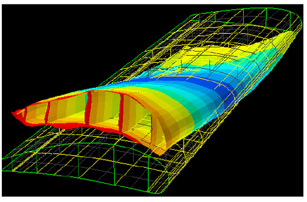

Engineering Stress & Strain
Stress and Strain
Stress is often difficult to explain because it is not easy to see. While a meter in length is roughly the nose-to-tail of a medium-sized dog, a brick with a mass of 2 kilograms feels heavy, and a lightbulb with a higher wattage is brighter, a beam undergoing 12MPa of stress is not clear what is going on to a simple observer…until it breaks!
Length |
Mass |
Wattage |
Stress? |
| DOG PICTURE | BRICK PICTURE | LIGHTBULB PICTURE | QUESTIONMARK BEAM |
As engineers, we are tasked with designing and building objects that are safe to use and perform the tasks they are intended for. It is very important that we calculate stresses and choose the right materials and geometries so that they don’t break by accident!
When a force acts on a material, causing it to bend, pull, compress, or twist, then the molecules within that material are moved further apart or closer together. These molecules do not like to be separated, and the material will have an internal resistance against the applied load. This is called Stress.
Stress is calculated using only the amount and direction of forces applied, and the geometry of the material.
Whether or not it will break depends on what the material is made of.
The amount that a material expands relative to its original size is called strain.
Stress and strain are directly proportional to each other by a factor called Young’s Modulus of Elasticity1 which is a material property, and can be seen visually in the Stress-Strain Diagram show below.
Stress-Strain Diagram

If only pulled apart slightly and then released, then the molecules will return to their normal unstressed state. This is called an elastic deformation. Pulled too far apart, and there can be irreparable damage done to the material, often stretching and elongating – this is called plastic deformation. When these molecules are pulled even further apart the material will fracture and break into separate pieces.2
Calculating Stress
How to Calculate Stress
Though the term may be intangible, it is relatively straightforward to calculate using knowledge of the following:
- How much force is applied to a material
- Its geometry
- Its Young’s Modulus of Elasticity
Below are the three main types of stress, and their general equations using known material properties and geometry.
| Bending | Twisting | Tension |
| Eq | Eq | Eq |
| Picture | Picture | Picture |
The more difficult part is keeping a ledger of which stresses are Normal or Shear, which planes they are in, and if they are positive or negative.
To help with these three issues, a representative cube is used as a visual aid. Each face of the cube has normal stresses (stresses perpendicular to each face) which represent the material being compressed or pulled apart, and shear stresses (stresses within each plane) which can be imagined as the material sliding against itself with friction between the two surfaces, or someone pulling two opposite corners of a square piece of fabric apart.
VISUAL OF NORMAL AND SHEAR STRESSES
As Newton’s Third law has taught us, for every action there is an equal and opposite reaction. Assuming the material in question is not in motion, for each stress applied to this cube in one direction, there is an equal stress in the opposite direction. For Normal stresses, this means the top and bottom face stresses are pulling up and down respectively with the same quantity. Likewise, the front and back and left and right stresses pull in equal but opposite directions from each other. The Shear stresses are a bit more complicated
VISUAL OF CUBE W/ EQUAL & OPPOSITE FORCES

Stress Visualization
Picture This
One way to visualize stress is through color. You may have seen Finite Element Analyses pictures like the one below that highlight a stressed area versus non-stressed area. In pictures like these the different types of stress are not usually differentiated, red just means more stress, and yellow or blue represent less. these, Compressive Stress, where a material’s molecules are pushed together, is often colored differently than Tensile Stress, where a material’s molecules are pulled apart. In the following picture, red represents Tensile stress, Green represents...
Using this Tool
A cantilever beam is a long thin piece that is fully supported at one side. Cantilevered beams are used in engineering problems very frequently as they are great representations of many common engineered products from bridges to airplane wings.
Stress Tool
Material and Geometry
| Units | m / GPa / kgs | |
| Material | 69 GPa | |
| Cross section | (Circle or Square Choice) | (Radius: Value, or Height/Width: Values) |
| Length (wall to end) | ||
Apply Loads
| Forces | x | |
| y | ||
| z | ||
| Moments | x |
Stress Equations
Stress Results
StressOutputHere